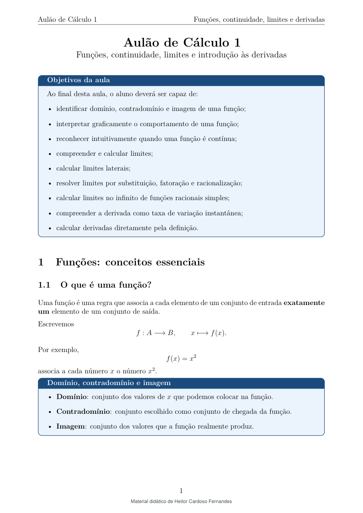
Cálculo · Estudantes de graduação
Cálculo 1: funções, limites e continuidade
Introdução a funções, continuidade e limites, com gráficos, exercícios e uma primeira abordagem da derivada pela definição.
Ensino de exatas
Planos de aula, apostilas e exercícios comentados. Consulte os temas de cada conjunto e abra os materiais completos em PDF.
15 conjuntos · 30 PDFs
Nível e finalidade
Área

Cálculo · Estudantes de graduação
Introdução a funções, continuidade e limites, com gráficos, exercícios e uma primeira abordagem da derivada pela definição.
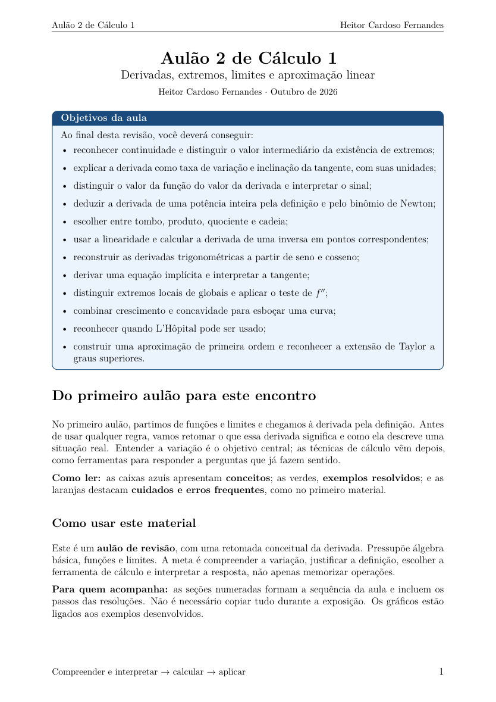
Cálculo · Estudantes de graduação
Uma revisão que parte do significado da derivada e avança para regras de cálculo, extremos, esboço de curvas e aproximações. Os exemplos têm gráficos e resoluções comentadas.
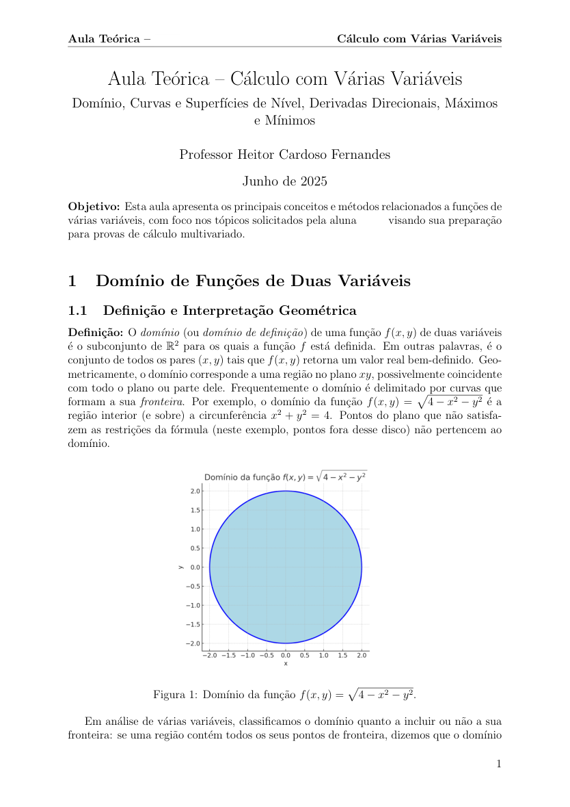
Cálculo · Estudantes de graduação
Estudo de domínios, curvas e superfícies de nível, derivadas direcionais e problemas de máximos e mínimos, com explicações e exemplos.
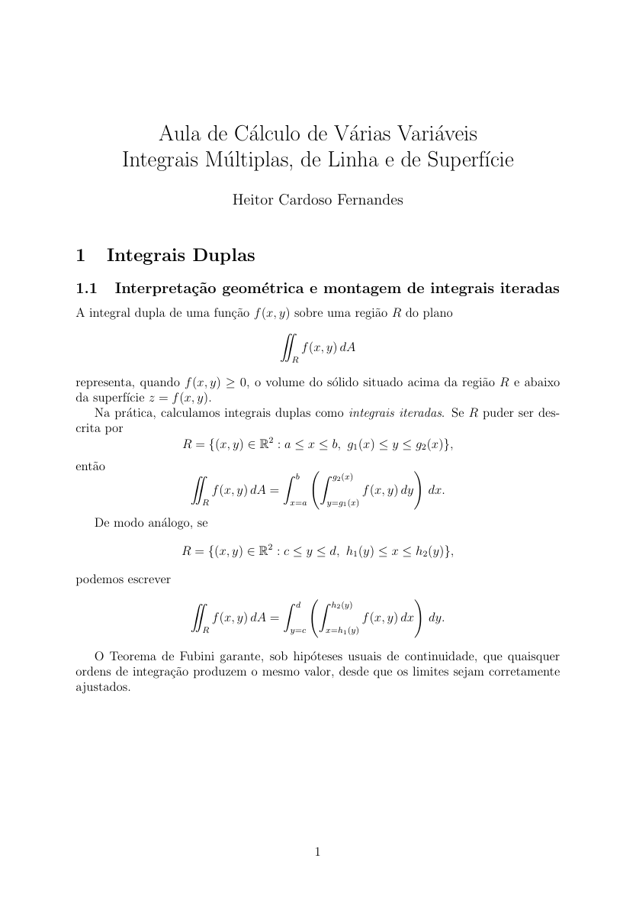
Cálculo · Estudantes de graduação
Duas aulas com montagem de integrais, mudanças de coordenadas e integração em campos vetoriais. A segunda retoma e desenvolve os exemplos da primeira.
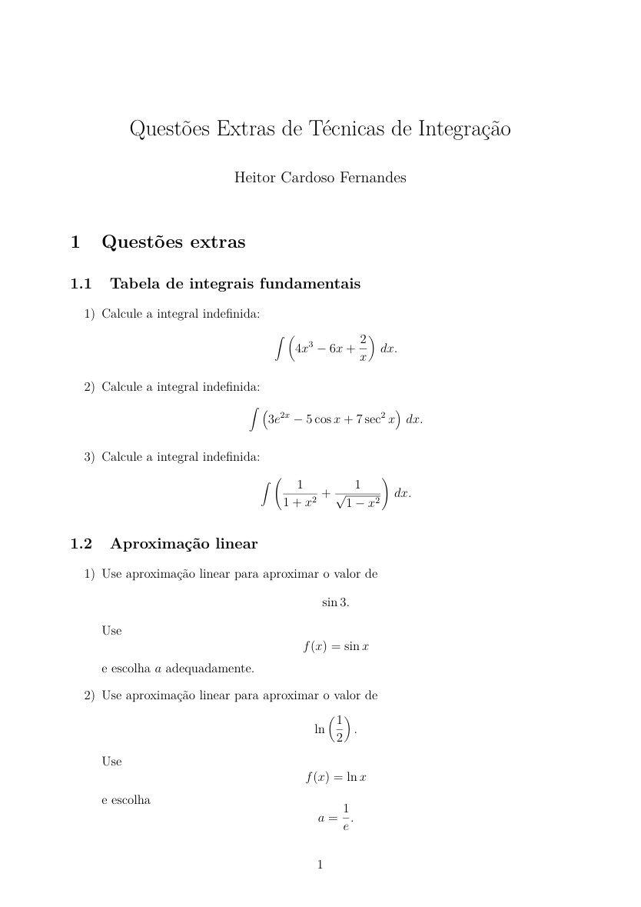
Cálculo · Estudantes de graduação
Lista de questões e resoluções sobre integrais fundamentais, aproximação linear e técnicas de integração. O documento pode ser consultado como material complementar.
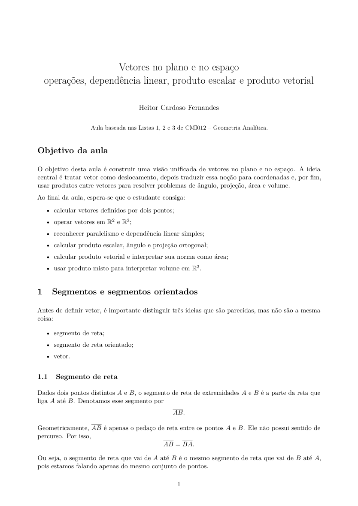
Matemática · Estudantes de graduação
Aula que parte da interpretação de vetores como deslocamentos e desenvolve operações, dependência linear e produtos entre vetores.
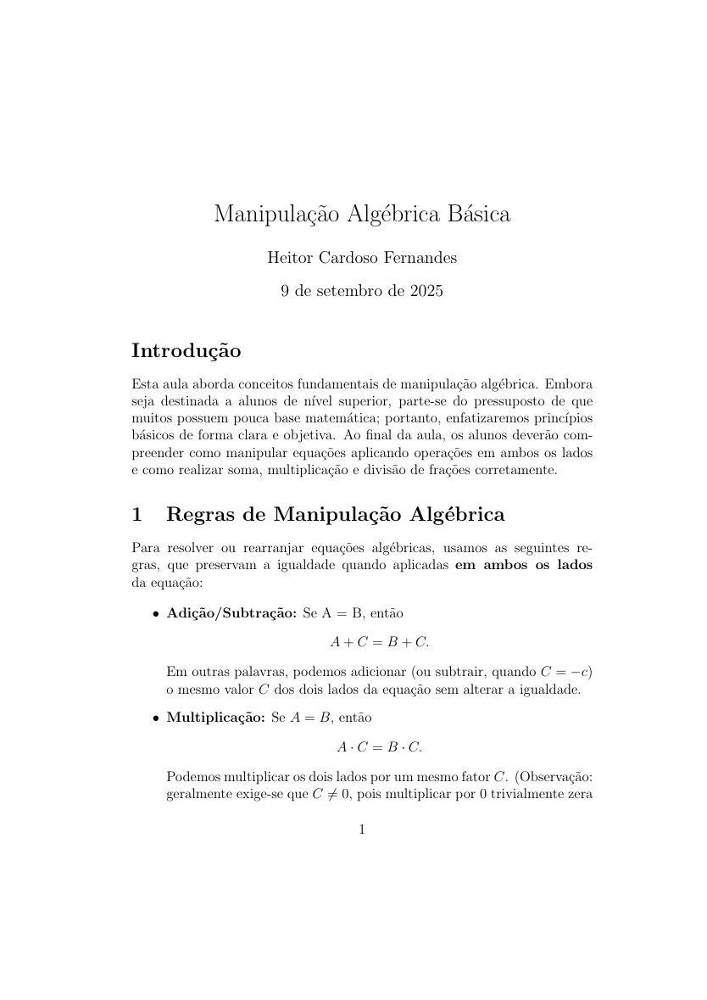
Matemática · Nivelamento para a graduação
Revisão de operações em equações e frações, destinada a estudantes que precisam retomar a base matemática antes de avançar nas disciplinas de exatas.
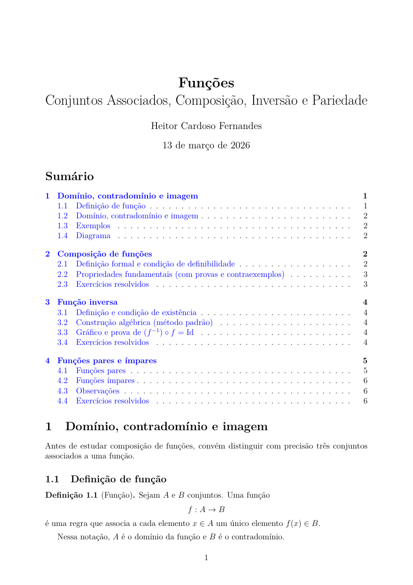
Matemática · Preparação para olimpíadas de Matemática
Aula de funções acompanhada de desafios resolvidos sobre composição, inversão e iterações de funções afins.
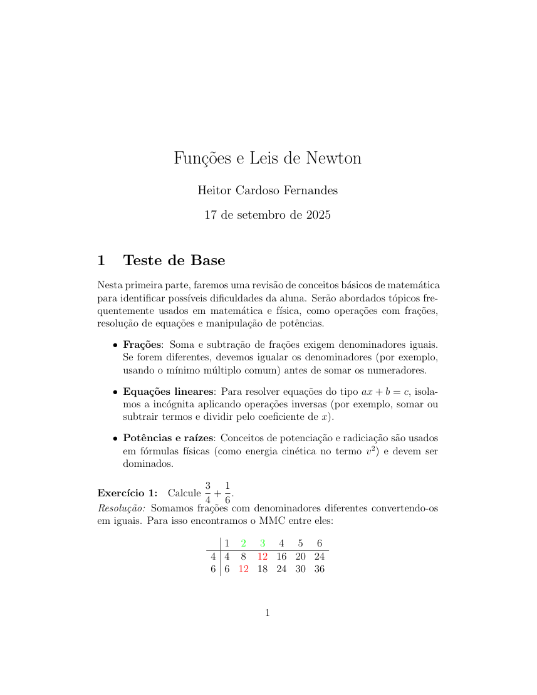
Matemática e Física · Reforço de ensino médio
Sequência de aulas que combina revisão de funções e álgebra com dinâmica e estática. Inclui um complemento com frações e equações.
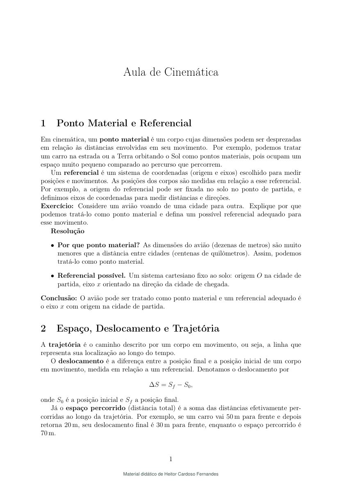
Física · Estudantes de ensino médio
Aulas sobre descrição do movimento e aplicação das leis de Newton, com situações resolvidas e exercícios.
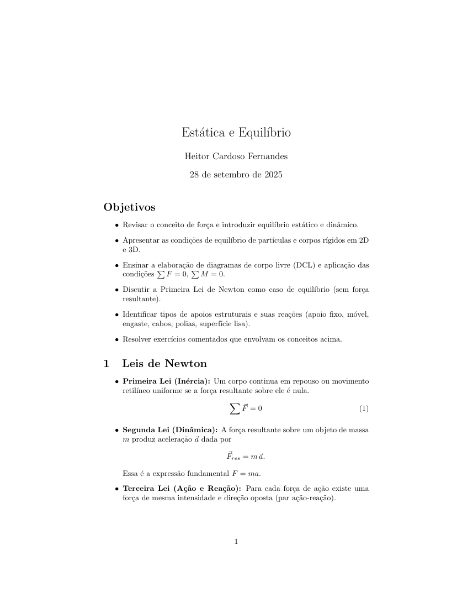
Física · Estudo de mecânica e equilíbrio
Aula com diagramas de corpo livre, equilíbrio de partículas e corpos rígidos, momentos de força e reações em apoios, com problemas em duas e três dimensões.
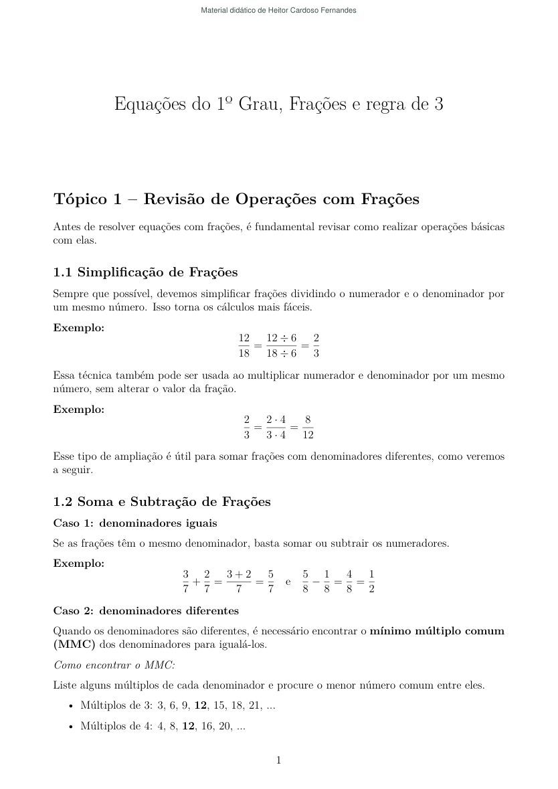
Matemática · Preparação para concursos
Revisão de frações, equações, regras de três e sistemas, com exercícios de fixação. Os documentos incluem recortes preparatórios para TRE/AC e TJPR.
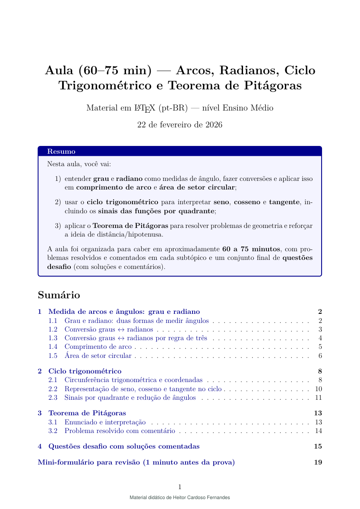
Matemática · Estudantes de ensino médio
Aula com conversão de medidas angulares, comprimento de arco, área de setor e leitura do ciclo trigonométrico, seguida de problemas com o teorema de Pitágoras.
Física · Estudo de eletricidade
Apresentação sobre aplicação das leis de Kirchhoff e uma lista de exercícios de Lei de Ohm, com problemas de corrente, resistência e potência.
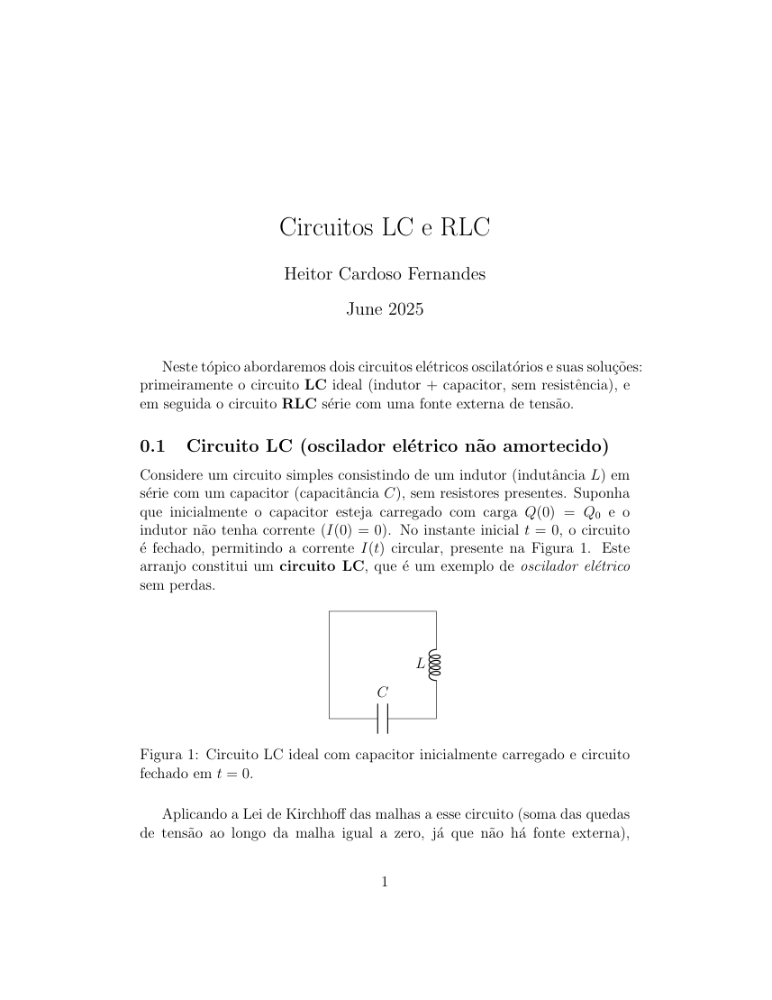
Física · Estudo de Física em nível superior
Estudo dos circuitos LC e RLC, com equações diferenciais, oscilações livres e forçadas, amortecimento e ressonância.
Nenhum conjunto encontrado para essa busca.
Este acervo reúne materiais de Heitor Cardoso Fernandes para aulas e estudo de exatas. Cada conjunto agrupa o documento principal e seus complementos; versões anteriores e cópias de trabalho não aparecem como aulas diferentes.
Os materiais apresentam explicações, exemplos resolvidos e atividades de consulta. Os créditos registrados nos documentos foram preservados. Livros e arquivos de terceiros usados como fonte de preparação não são redistribuídos aqui.